| 日付 | 2015年7月12日（日） |
|---|---|
| 山域 | 赤城・榛名 |
| メンバー | 家族（妻、長女・4歳、長男・2歳） |
| 山行形態 | 子連れ日帰り |
| アクセス | 車 |
| ルート (Map) | 黒檜山北登山口 (8:21) - (9:53) 黒檜山 (10:27) - (11:20) 駒ヶ岳 (12:11) - (12:54) 登山口 - (13:05) 赤城神社 (13:22) - (13:34) 黒檜山北登山口 |
今年の春に赤城山の側火山である荒山を訪れた。
赤城山は十分日帰り可能圏内であることが分かったため、
今回は赤城山の最高峰である黒檜山に登ることにする。
梅雨明け前のため、まだ空いていることを期待し赤城に向かう。
登山口の小さな駐車場に車を停める。標高1360m。
いくつかの駐車場があるが、ここの駐車場が一番登山口に近い。
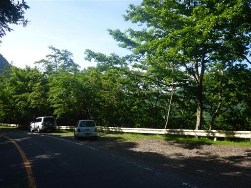
道路を挟んだ反対側が黒檜山の登山口だ。
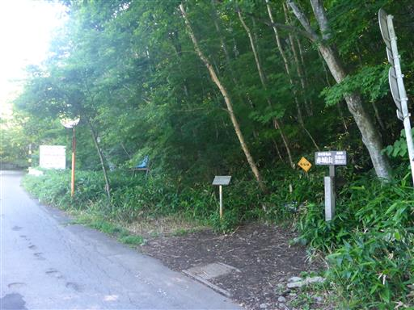
登山道はいきなりの急登から始まる。
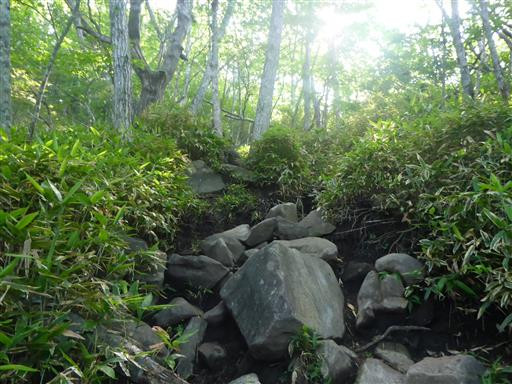
眼下に美しい大沼と赤城神社が見えてくる。
その後ろに聳える山は地蔵岳だ。
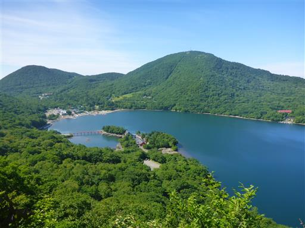
まだまだ急な坂道が続く。登山道が広すぎるため、どこを歩いてよいか迷う。
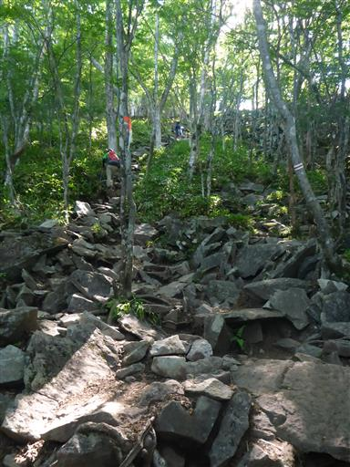
急坂には大きな石がゴロゴロしていて、それらを乗り越えて進んでいく。
登りにくいのか娘のペースがなかなか上がらない。
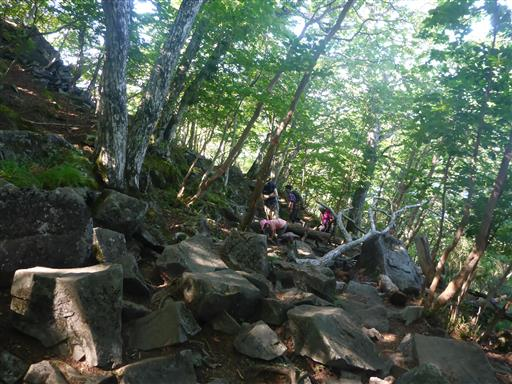
辺りは濃い緑に覆われている。

ほとんどは樹林帯の中だが、所々で展望が開ける。
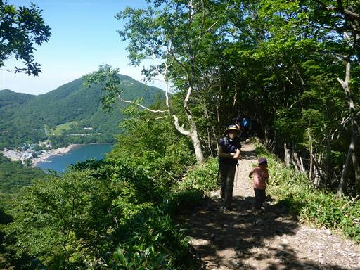
登山道にある多くの石に傷がついている。
冬山登山時のアイゼンの跡だろうか？
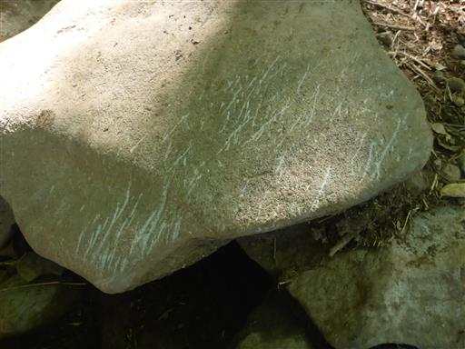
黒檜山の山頂に到着する。標高1828m。
ここが赤城山の最高峰だ。
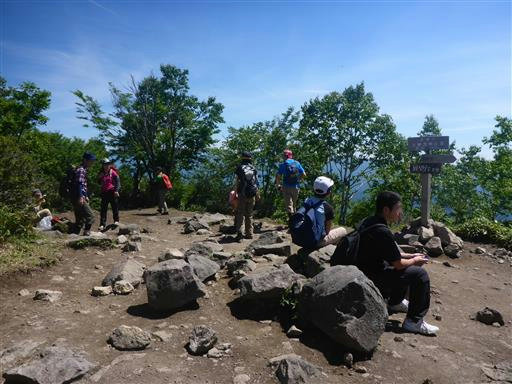
どこまでも山々が折り重なっている。
山頂では休憩せずに、近くにある展望台まで移動することにする。
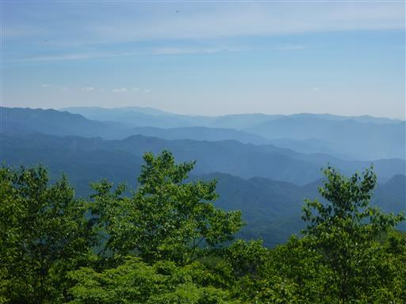
展望台までは起伏の少ない気持ちの良い道が続く。
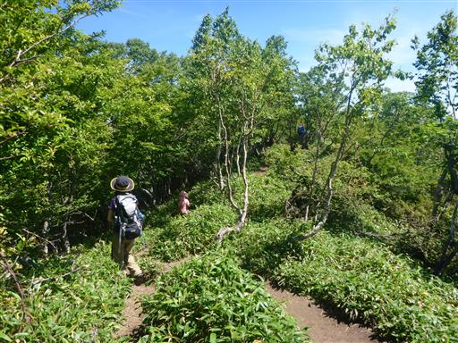
展望台に到着。間近に迫る山は無いが、多くの山を見渡すことができる。
こちらは谷川連峰から巻機山の稜線だ。
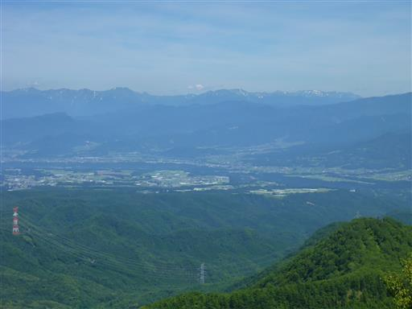
眼下にでこぼこしているのは榛名山。背後に薄ら浅間山が見えている。
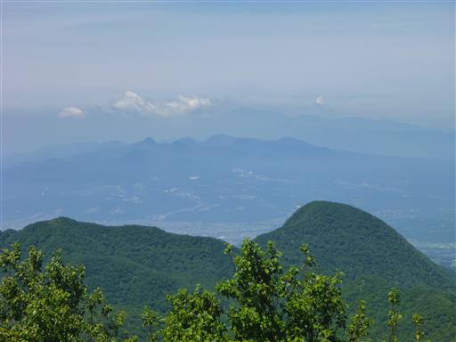
日光白根山や皇海山など、日光や足尾の山々も望める。
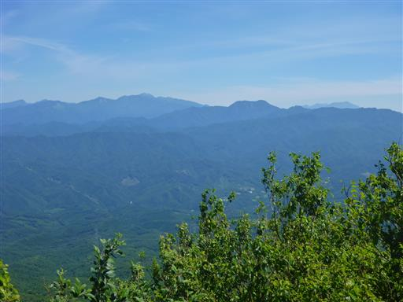
一筋の雲がきれいだ。昼食にはまだ早いため、おやつを食べたら出発する。
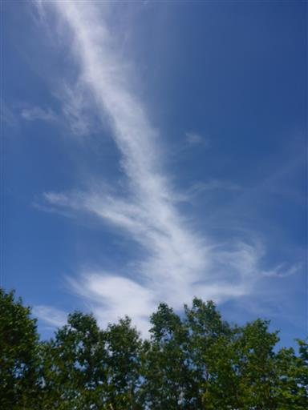
展望台からは息子も歩き始める。
黒檜山に戻ってしばらく進むと、黒檜大神神社が建っている。
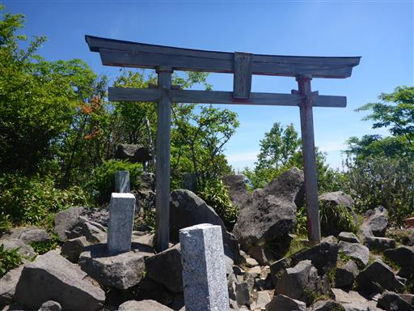
次なる目的地、駒ヶ岳の姿が見えてくる。
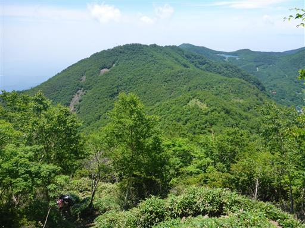
正面に小沼が見える。大沼よりも標高の高い場所にある小さな湖だ。
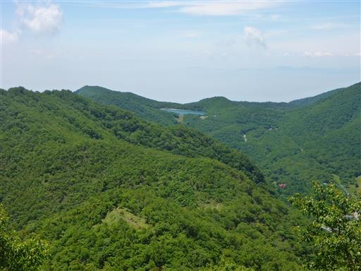
稜線歩きも急な階段道。息子は手をつないでジャンプして下りている。
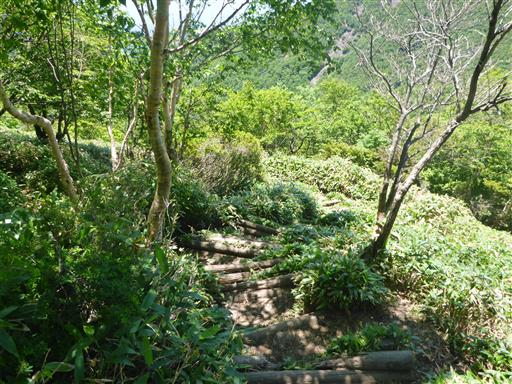
この辺りは木が少ない。昼になって気温が上がったため、とにかく暑い。
息子は長い下りに音を上げたため、再びキャリアに乗せてあげる。
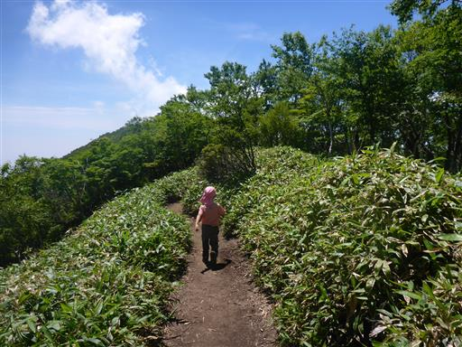
振り返ると、こんもりとした黒檜山が見える。ここから駒ヶ岳まで登り返しだ。
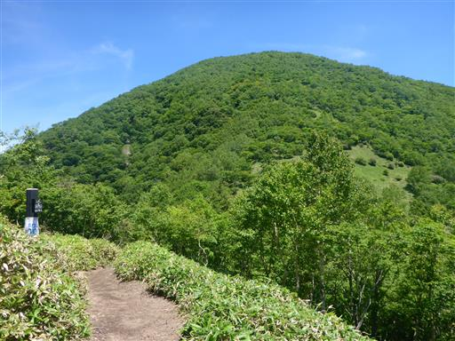
駒ヶ岳山頂に到着。標高1685m。
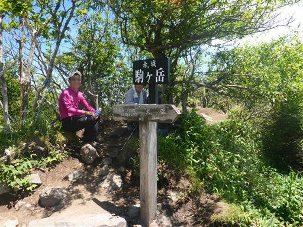
こちらの山頂は狭く、展望もあまり良くない。
大沼が木々の間から僅かに見える程度だ。
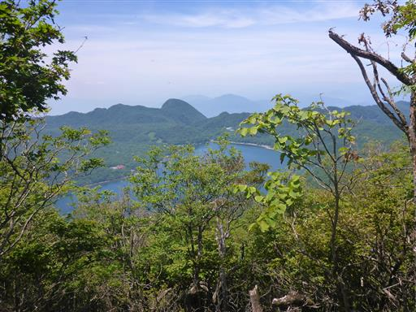
反対側は靄でもうほとんど何も見えない。
少々窮屈だが、狭い山頂で昼食をとることにする。
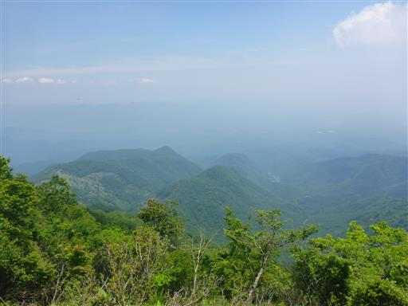
昼食をとったら山頂を出発。崩壊地では赤い土がむき出しになっている。
この赤い土が赤城山の名の由来だろうか？
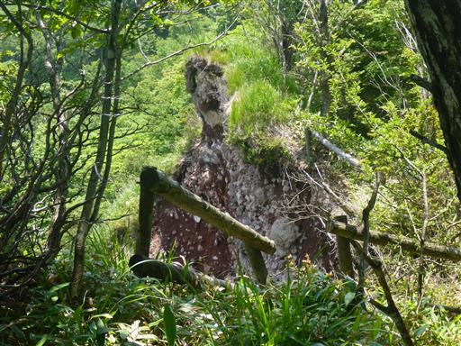
しばらくは歩きやすい稜線の登山道だ。
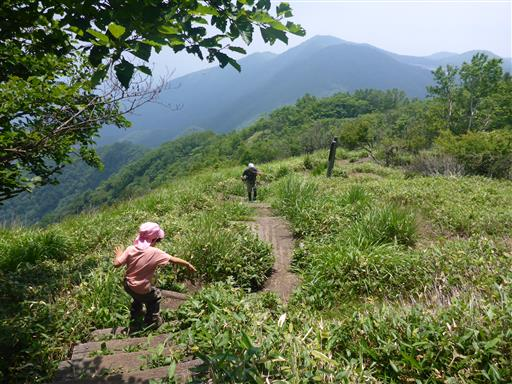
途中で稜線を外れて再び急坂になる。
鉄の階段は歩幅が小さく、非常に下りにくい。
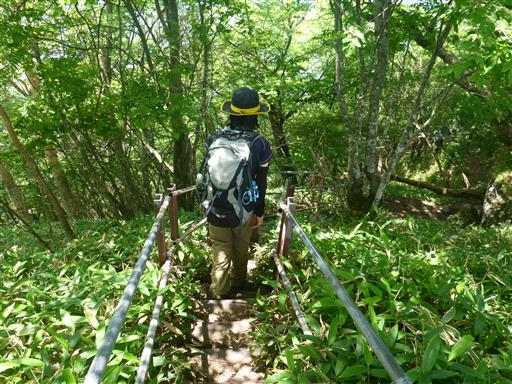
足元に白い花が咲いている。
今は高山植物が咲き競う時期なのだが、この山は花が非常に少ない。
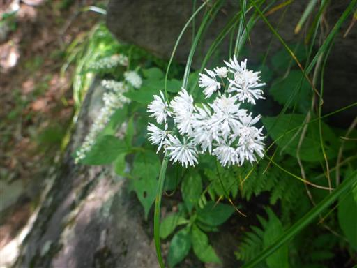
車道に下山する。
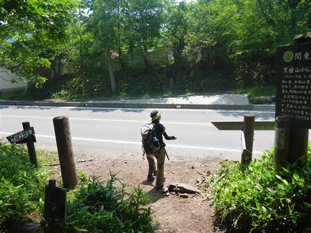
下山地点は大沼の湖畔だ。
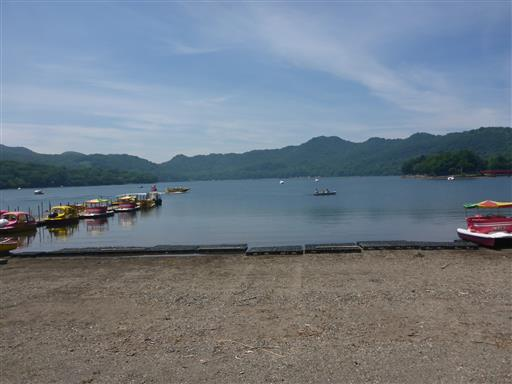
山の中にある湖だけあって、水はそこそこきれいだ。
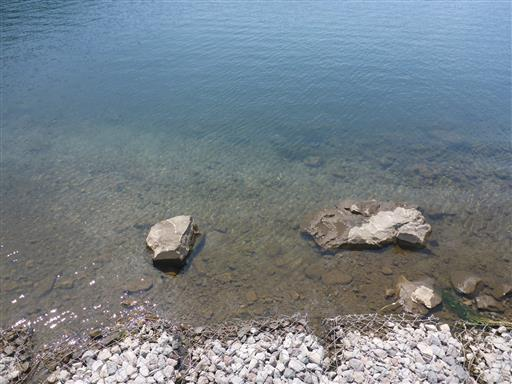
赤城神社に立ち寄る。神社に続く赤い橋を渡る。
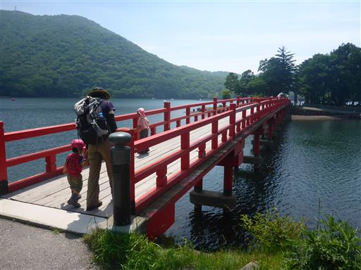
橋から湖を眺める。鯉と小魚がたくさん泳いでいる。
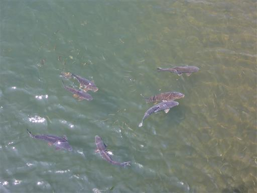
橋を渡ったら赤城神社の立派な鳥居を潜る。
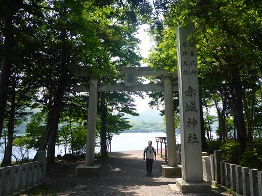
赤城神社拝殿。全国に300ある赤城神社の本宮と推測されている歴史ある神社だ。
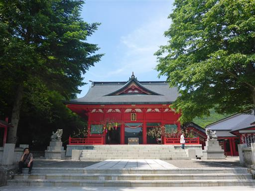
鯉の餌をあげている人がいて、大量の鯉が集まって来ている。
娘は興味深そうに眺めているが、餌は200円と少々高い。
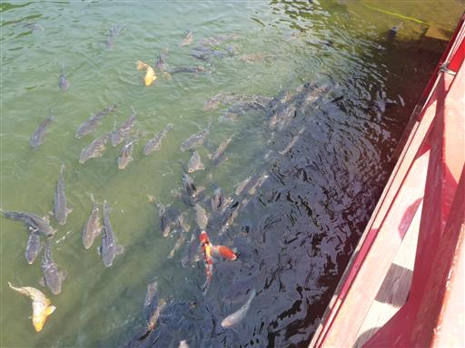
売店でソフトクリームを買おうとすると、娘はそれよりも鯉の餌が欲しいと言う。
鯉の餌を手に入れた子供たちは嬉しそうに餌を投げている。よっぽど欲しかったのだろう。
山では素晴らしい景色を眺められ、湖では子供たちも楽しめて、良い休日になった。
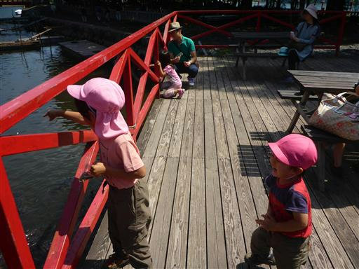